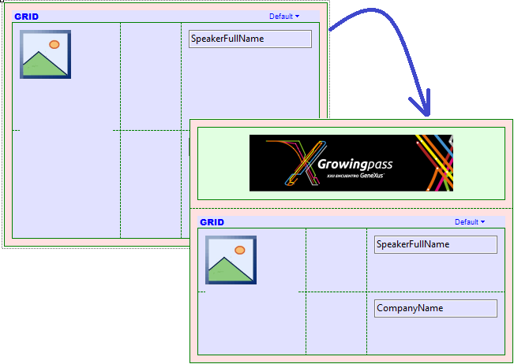
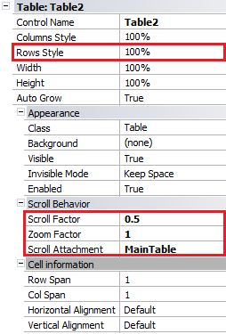
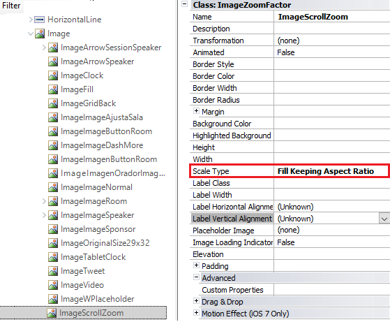

This property is available for Table and Canvas controls included in SD Panels and WWSD. Its value is a sequence of Control Names (eventually one) to which the Scroll Factor and Zoom Factor properties will be applied when any of these controls is scrolled by the end user in the application. By default, its value is "Parent", indicating the control in which it is embedded, but can be replaced by a sequence of Control Names separated by a semicolon. SyntaxScroll Attachment := Control Name [ ; Control Name ] * Usage exampleIn EventDay, suppose we want to apply this UI/UX feature to the list of speakers. For this example, we use iOS Generator. First, open the List section of the WorkWithDevicesSpeaker object. From the toolbox, drag a Table control (it can be a Canvas control, too) and drop it at the top of the Main Table, above the Speakers Grid. Inside the table, insert an Image object (previously loaded - or it can be an Attribute/Variable Image instead).  Make sure that the following properties have been set as shown below:
The reason for that is that we want a parallax effect when we scroll down in the panel beyond the limits, creating a zoom effect on the image. Then, at Table control level we must configure the Scroll Factor and Zoom Factor properties with 0.5 and 1 values, respectively; also, to indicate what control will be used as a reference we must set the Scroll Attachment property to MainTable.  One last thing that we must ensure is that the Class associated with the Image object has the Scale Type property set to “Fill Keeping Aspect Ratio”. With this configuration, the image will be filled proportionally in its own container (in this case, the Table control in which it is embedded). Note: Usually this is not necessary because it is provided by default in the SimpleiOS theme, but in EventDay sample it is associated with the EventGXiOS7 theme for iOS layouts, whose value for Image class in the Scale Type property has been set to a different value. For this reason, we create another Image class called “ImageScrollZoom” with “Scale Type property = Fill Keeping Aspect Ratio” (see Advanced Usage Example to know the effect achieved with other values).  Finally, the application at runtime looks as follows: Advanced Usage ExampleStretched image By keeping the same properties for the Table in which the Image is embedded, and changing the Scale Type property to “Fill” value in the associated class, we obtain the following effect:
Raise imageA negative value in Scroll Factor property and Scale Type property with “Fill” value (at Image class theme level), cause that when you scroll down the attached control, the Table/Canvas will scroll in the other way, generating the effect that raises the image.
ScopeObjects: Panel for Smart Devices, Work With for Smart Devices Languages: .NET, Java SD Generators: iOS AvailabilityThis property is available since GeneXus 15 See also |
| Backlinks | ||
| Motion Effect properties group | Scroll behavior properties group | Scroll Factor property |
| Zoom Factor property |